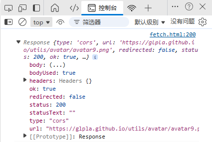
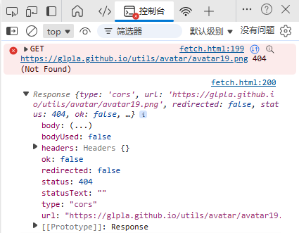

网络请求
@Fetch- Overview
- Fetch 是 W3C 的一种请求标准；不是第三方库，与 Vue、JQuery 无关
- 是原生的 JavaScript，是 Window 的方法，属于 BOM 范畴
- 下一代 Ajax 技术，基于 Promise 方式处理数据 - 返回结果是 Promise
- 语法简介明了；除了 IE，多数浏览器都兼容；请忘记 IE 吧
- Syntax
- Promise 方式
- 推荐使用异步等待 asyn-await；更像同步操作；见后续案例
- Request
- 请求的资源类型有：
res.json()：JSON 数据；应用最广泛
res.text()：文本类型资源，如.txt .html .docx 等
res.formData()：表单对象
res.blob()：多媒体对象，如图片
- Response
- 拿到结果需要 2次 处理
- 第一个 then() 返回的 Response 对象，包含了一些元数据和方法，但不直接包含请求返回的实际数据；要获取实际的 JSON 数据，需要调用 res.json() 方法将 Response 对象解析为 JSON 数据，并返回一个新的 Promise
- 第二个 then() 处理解析后的 JSON 数据
- 有时候，我们可能只想要获取数据的内容类型，不需要具体的数据
- 如果需要数据，就再解析
- Configuration
- method（String）：HTTP 请求方法，Get 获取数据 | Post 提交数据 | Delete 删除数据 | Put 更新数据；默认为 GET
- body（String）：HTTP 请求的参数；POST 时使用
- headers（Object）：HTTP 请求头，如 content-type 的常见值为 application/json、application/x-www-form-urlencoded
- 在开发者视图的控制台查看获取结果
- 多数静态托管平台做了代理，可以直接访问；否则需要进行代理处理
- 可用于模块化开发；不需要写完整的 html 结构，只写业务结构即可；见底部版权
- 指定 accept 获取特别类型的图片，如去除水印、获取特定类型的图片 - 和浏览器和后端服务器有关
- 默认图片，url 是 png，另存为是 avif
- 指定获取为 png
fetch( url, {
method: '',
headers: {
'Content-Type': 'application/json'
},
body: ''
} )
.then( res => res.json() )
.then( res => {
console.log( 'success ', res )
} )
二进制大对象 Blob - Binary Large Object
它可以包含任何类型的数据：图片、音频、视频、PDF、文本
通常用于请求多媒体资源
如果数据是 json 格式，可以省略 header 配置项；具体还要看服务器端的适配情况
[] 请求 JSON 数据
const getRank = async() => {
const res = await fetch('https://glplaman.github.io/utils/data/rank/202402.json')
const data = await res.json()
console.log(data);
}
getRank()
[] 请求纯文本 .txt
const getTxt = async() => {
const res = await fetch('https://glplaman.github.io/utils/data/rank/202402.txt')
const txt = await res.text()
console.log(txt);
}
getTxt()
[] 请求网页 .html
const getHtml = async() => {
const res = await fetch('../../common/footer.html')
const html = await res.text()
console.log(html);
document.getElementById('footer').innerHTML = html;
}
getHtml()
[] 请求图片并渲染
const getLogo = async () => {
const res = await fetch('https://glpla.github.io/utils/avatar/avatar9.png')
const data = await res.blob()
document.querySelector('#img').src = URL.createObjectURL(data)
}
getLogo()
https://png.pngtree.com/recommend-works/png-clipart/20250101/ourmid/pngtree-cartoon-deer-standing-png-image_14982249.png
fetch('https://png.pngtree.com/recommend-works/png-clipart/20250101/ourmid/pngtree-cartoon-deer-standing-png-image_14982249.png', {
headers: {
'Accept': 'image/png'
}
})
.then(response => response.blob())
.then(blob => {
const url = URL.createObjectURL(blob);
img.value = url;
console.log(img.value);
})
.catch(error => console.error('Error:', error));
[] formData() - 请求表单
异常处理
- try-catch
- 捕获异常
- fetch()
- 客户端收到响应头，就认为请求已经成功
- 捕获的情况
网络层面失败，无法发起或完成请求 - A Fetch API promise will be rejected only in case of network failure.
网络连接失败
DNS解析失败
- 无法捕获的情况
404：资源不存在
500：服务器本身存在问题，如服务器端代码执行出错、数据库连接失败、服务器配置问题，而不是客户端请求的问题
- 应根据响应的 status 或 ok 判断并手动抛出异常
try {
tryStatements
} catch (exceptionVar) {
catchStatements
} finally {
finallyStatements
}
[] 请求图片并渲染 - 改进版
const getLogo = async () => {
try {
const res = await fetch('https://glpla.github.io/utils/avatar/avatar9.png')
if (!res.ok) {
throw new Error(`HTTP error! status: ${res.status}`);
}
const data = await res.blob()
document.querySelector('#img').src = URL.createObjectURL(data)
} catch (error) {
console.error('Failed to fetch logo:', error.message);
// 提示错误信息
// alert(error.message);
}
}

